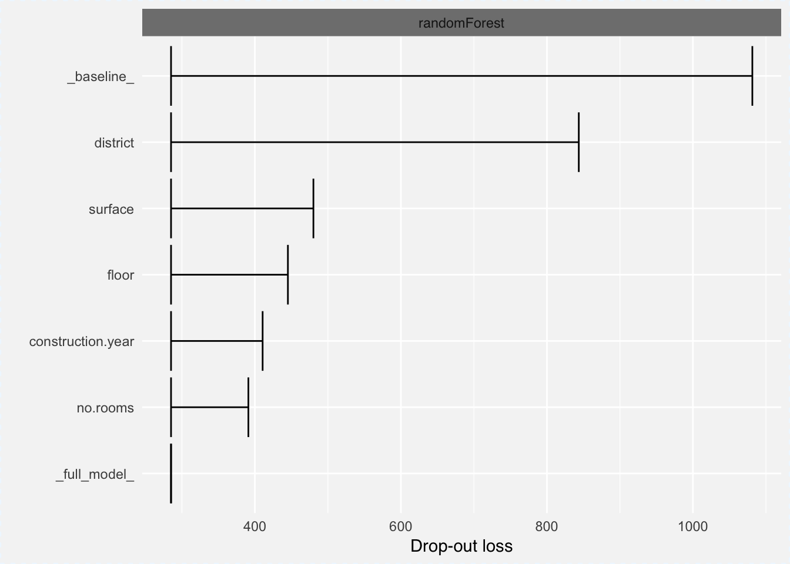

Chapter 10 iBreakDown for Variable Attributions with Interactions
In the Section 9 we presented a model agnostic approach to additive decomposition of model predictions. We also showed that for non-additive moedls the proposed attribution depends on the ordering of variables.
Lack of additivness means, that effect of one variable is modulated by another variable(s). In such pair (or larger tuple) a single variable does not contribute independently, therefore in model explanations they should be presented together.
In this section we present an algorithm that identifies interactions between pairs of variables and include such interactions in variable decomposition plots. Here we present an algorithm for pairs of variables, but it can be easily generalized to larger number of variables.
10.1 Intuition
First, let’s see an example of an interaction between two variables.
We will use real data from the Titanic dataset. Table 10.1 shows survival statistics for men on Titanic. For the sake of simplicity, in this example we consider only two variables - age and class. In the data age is a continuous variable, but again, for simplicity we have dychotomized it into two levels: boys (0-16 years old) and adults (17+ years old).
Suppose that we would like to explain factors that contribute to the survival of kids from the second class. As we can read, the survival for young passengers from 2nd class is 91.7% (survived 11 out of 12 male passengers in this group). It is higher than survival for men on titanic which is 20.5% (survived 352 out of 1716 men). So the question is, how age and class contribute to this higher survival?
Let us consider two explanations, that correspond to two different orderings:
- Overall men survival is 20.5%, but when we condition on male passengers from 2nd class the survival is even lower, i.e. 13.5%. Thus effect of the 2nd class is negative, it decreases the probability of survival by 7 percent points. Being a kid in the 2nd class is very lucky though. It changes of survival increase from 13.5% (male 2nd class) to 91.7% (boys from 2nd class). It’s an increase by 78.2 percent points. So the contributions are -7% for class and +78.2% for age.
- Overall men survival is 20.5%, but when we condition on young man then the survival is higher, i.e. 40.7%. Thus the effect of age is positive, being a boy increases the probability of survival by 20.2 percent points. Being a kid in 2nd class is even better, it changes the survival increase from 40.7% (boys) to 91.7% (boys from 2nd class). It’s an increase by 51 percent points. So the contributions are +51% for class and +20.2% for age.
As we see these two paths leads to two very different explanations. They differ not only in the size but also in the sign of attributed importance. It has happend because one variable modulate effect on the second variable as the moedl is not additive. Below we will show how to deal with such cases.
| Class / Age | Kids (0-16) | Adults (>16) | Total |
|---|---|---|---|
| 1st | 5/5 = 100% | 57/175 = 32.6% | 62/180 = 34.4% |
| 2nd | 11/12 = 91.7% | 13/166 = 7.8% | 24/178 = 13.5% |
| 3rd | 17/61 = 27.9% | 58/430 = 13.5% | 75/491 = 15.3% |
| deck crew | 43/66 = 65.2% | 43/66 = 65.2% | |
| engineering crew | 71/324 = 21.9% | 71/324 = 21.9% | |
| restaurant staff | 1/67 = 1.5% | 1/67 = 1.5% | |
| victualling crew | 0/3 = 0% | 76/407 = 18.7% | 76/410 = 18.5% |
| Total | 33/81 = 40.7% | 319/1635 = 19.5% | 352/1716 = 20.5% |
The key intuition behind an iBreakDown algorithm is to include variable interactions to the visual explanations. To do this we need to identify some candidated for interactions. Here we propose a very simple algorithm that will do this in two steps.
- First it will calculate variable contributions for each variable independently.
- Second it will calculate joint effect for each pair of variables. If this effect is different than the sum of separate variables then such pair is identified as candidate for an interaction.
10.2 Method
Identification of interactions in the model is performed in three steps (Gosiewska and Biecek 2019a)
- Calculate a single-step contribution for each variable.
- Calculate a single-step contribution for every pair of variables. Subtract individual contributions to assess the size of non additivness.
- Order interaction effects and additive effects in a list to determin the final order for conditioning/explanations.
This simple intuition may be generalized into higher order interactions.
10.2.1 Single step contributions
For a feature \(x_i\) we may define a single-step contribution as \[ \Delta^j = \mathbb{E}[f(x)|x^j = x_*^j] - \mathbb{E}[f(x)]. \]
The expected model prediction \(\mathbb{E}[f(x)]\) is sometimes called baseline or intercept and may be denoted as \(\Delta_\varnothing\).
Expected value \(\mathbb{E}[f(x)|x^j = x_*^j]\) corresponds to an average prediction of a model \(f\) if feature \(x_j\) is fixed on \(x^j_*\) coordinate from the observation to explain \(x_*\).
I.e. the \(\Delta^j\) is the difference between expected model response after conditioning on \(j\) variable minus the expected model response. \(\Delta^j\) measures a naive single-step local variable importance, it indicates how much the average prediction of model \(f\) changes if feature \(x^j\) is set on \(x_*^j\).
10.2.2 Two steps contributions
For a pair of variables \(x_i\), \(x_j\) we introduce a single-step contribution as \[ \Delta^{ij} = \mathbb{E}[f(x)|x^i = x_*^i, x^j = x_*^j] - \mathbb{E}[f(x)]. \]
And non additive component of this contribution as
\[ \Delta_{I}^{ij} = \mathbb{E}[f(x)|x^i = x_*^i, x^j = x_*^j] - \mathbb{E}[f(x)|x^i = x_*^i] - \mathbb{E}[f(x)|x^j = x_*^j] + \mathbb{E}[f(x)]. \]
Or equivalently
\[ \Delta_{I}^{ij} = \Delta^{ij} - \Delta^i - \Delta^j. \]
10.2.3 Sequential contributions
The \(\Delta_{I}^{ij}\) is the difference between collective effect of variables \(x^i\) and \(x^j\) denoted as \(\Delta^{ij}\) and their additive effects \(\Delta^{i}\) and \(\Delta^{j}\). Therefore, \(\Delta_{I}^{ij}\) measures the importance of local lack-of-additivnes (aka. interaction) between features \(i\) and \(j\). For additive models \(\Delta_{I}^{ij}\) should be small~for any \(i\), \(j\).
Note that contributions \(\Delta^{i}\) do not sum to final model prediction. We only use them to determine the order of features in which the instance shall be explained. To calculate contributions that have the property of local accuracy we need to introduce one more symbol, that corresponds to the added contribution of feature \(i\) to the set of features~\(J\).
\[ \Delta^{i|J} = \mathbf{E}[f(X)| x^{J\cup\{i\}} = x^{J\cup\{i\}}_{*}] - \mathbf{E}[f(X)| x^{J} = x^{J}_{*}] = \Delta^{J\cup\{i\}} - \Delta^{J}. \]
And for pairs of features
\[ \Delta^{ij|J} = \mathbf{E}[f(X)| x^{J\cup\{i,j\}} = x^{J\cup\{i,j\}}_{*}] - \mathbf{E}[f(X)| x^{J} = x^{J}_{*}] = \Delta^{J\cup\{i,j\}} - \Delta^{J}. \]
Once the order of single-step importance is determined based on \(\Delta^i\) and \(\Delta_{I}^{ij}\) scores, the final explanation is the attribution to the sequence of \(\Delta^{i|J}\) scores. These contributions sum up to the model predictions, because
\[ \Delta^{1,2...p} = f(x_*) - E[f(X)]. \]
This approach can be generalized to interactions between any number of variables.
The complexity of the calculation of single step attributions is \(O(p)\) where \(p\) stands for the number of variables, wile complexity for all pairs is \(O(p^2)\). The complexity of the consecutive conditioning is \(O(p)\), thus the complexity of whole algorithm is \(O(p^2)\).
10.3 Example: Titanic
In this example we will use a random forest model for Titanic data and Johny D example - an 8 years old boy from 1st class.
In Table 10.2 we showed expected model responses \(\mathbb{E}[f(x)|x^i = x_*^i, x^j = x_*^j]\), single-step effects \(\Delta^{ij}\) and non-additive effects \(\Delta_{I}^{ij}\) for each variable and each pair of variables. All these values are calculated locally for Johny D. These values are sorted along local importance, most important to the top.
Based on this ordering a following sequence of variables are indentified as informative: age, fare:class, gender. embarked, sibsp and parch.
Once the ordering is specified, in the table 10.3 we showed how the sequential attribution is calculated. These values are then presented in the iBreakDown plot 10.1.
| Variable | \(E[f(x):x^{ij}= x_*^{ij}]\) | \(\Delta^{ij}\) | \(\Delta_I^{ij}\) |
|---|---|---|---|
| age | 0.505 | 0.270 | |
| fare:class | 0.333 | 0.098 | -0.231 |
| class | 0.420 | 0.185 | |
| fare:age | 0.484 | 0.249 | -0.164 |
| fare | 0.379 | 0.143 | |
| gender | 0.110 | -0.125 | |
| age:class | 0.591 | 0.355 | -0.100 |
| age:gender | 0.451 | 0.215 | 0.070 |
| fare:gender | 0.280 | 0.045 | 0.027 |
| embarked | 0.225 | -0.011 | |
| embarked:age | 0.504 | 0.269 | 0.010 |
| parch:gender | 0.100 | -0.136 | -0.008 |
| sibsp | 0.243 | 0.008 | |
| sibsp:age | 0.520 | 0.284 | 0.007 |
| sibsp:class | 0.422 | 0.187 | -0.006 |
| embarked:fare | 0.374 | 0.138 | 0.006 |
| sibsp:gender | 0.113 | -0.123 | -0.005 |
| fare:parch | 0.380 | 0.145 | 0.005 |
| parch:sibsp | 0.236 | 0.001 | -0.004 |
| parch | 0.232 | -0.003 | |
| parch:age | 0.500 | 0.264 | -0.002 |
| embarked:gender | 0.101 | -0.134 | 0.002 |
| embarked:parch | 0.223 | -0.012 | 0.001 |
| fare:sibsp | 0.387 | 0.152 | 0.001 |
| embarked:class | 0.409 | 0.173 | -0.001 |
| gender:class | 0.296 | 0.061 | 0.001 |
| embarked:sibsp | 0.233 | -0.002 | 0.001 |
| parch:class | 0.418 | 0.183 | 0.000 |
| Variable | \(\Delta^{i:J}\) | \(\Delta^{J\cup\{i\}}\) |
|---|---|---|
| intercept | 0.235 | |
| age = 8 | 0.269 | 0.505 |
| fare:class = 72:1st | 0.039 | 0.544 |
| gender = male | -0.083 | 0.461 |
| embarked = Southampton | -0.002 | 0.458 |
| sibsp = 0 | -0.006 | 0.452 |
| parch = 0 | -0.030 | 0.422 |
Figure 10.1: (fig:iBreakDownTitanicExamplePlot) Break Down Plots with interactions for Johny D.
10.4 Pros and cons
Break Down for interactions shares many features of Break Down for single variables. Below we summarize unique strengths and weaknesses of this approach.
Pros
- If interactions are present in the model, then additive contributions may be misleading. In such case the identification of interactions leads to better explanations.
- Complexity of Break Down Algorithm is quadratic, what is not that bad if number of features is small or moderate.
Cons
- For large number of variables, the consideration of all interactions is both time consuming and sensitive to noise as the number of pairs grow faster than number of variables.
- Identification of interaction is not based on significance testing, it’s purely based on absolute empirical effects, thus for small samples this procedure is prone to errors.
10.5 Code snippets for R
In this section we present key features of the iBreakDown package for R (Gosiewska and Biecek 2019a). This package covers all features presented in this chapter. It is available on CRAN and GitHub. Find more examples at the website of this package https://modeloriented.github.io/iBreakDown/.
All steps are very similar to these presented in the previouse chapter for variable attributions. The only difference is that the break_down() function will now take interactions = TRUE argument.
Model preparation
As in previous chapters we will use the random forest (Breiman et al. 2018) model titanic_rf_v6 developed for the Titanic dataset (see Section 4.1).
Using the same model will help us (1) to understand how the Break Down method works, (2) to compare these explanations against methods presented in previous chapters.
So let restore the explain_rf_v6 explainer
library("randomForest")
explain_rf_v6 <- archivist::aread("pbiecek/models/9b971")
library("DALEX")
johny_d <- archivist::aread("pbiecek/models/e3596")
johny_d## class gender age sibsp parch fare embarked
## 1 1st male 8 0 0 72 SouthamptonThe iBreakDown::break_down() function calculates Break Down contributions for a selected model around a selected observation.
The result from break_down() function is a data frame with additive attributions for selected observation.
The simplest use case is to set only the arguments - model explainers and observation of interest.
By default only additive attributions are calculated. Use interactions = TRUE argument to look for interactions.
## contribution
## Random Forest v6: intercept 0.235
## Random Forest v6: age = 8 0.270
## Random Forest v6: fare:class = 72:1st 0.039
## Random Forest v6: gender = male -0.083
## Random Forest v6: embarked = Southampton -0.003
## Random Forest v6: sibsp = 0 -0.006
## Random Forest v6: parch = 0 -0.030
## Random Forest v6: prediction 0.422The generic plot() function creates a Break Down plots.

References
Gosiewska, Alicja, and Przemyslaw Biecek. 2019a. “iBreakDown: Uncertainty of Model Explanations for Non-additive Predictive Models.” https://arxiv.org/abs/1903.11420v1.
Breiman, Leo, Adele Cutler, Andy Liaw, and Matthew Wiener. 2018. RandomForest: Breiman and Cutler’s Random Forests for Classification and Regression. https://CRAN.R-project.org/package=randomForest.